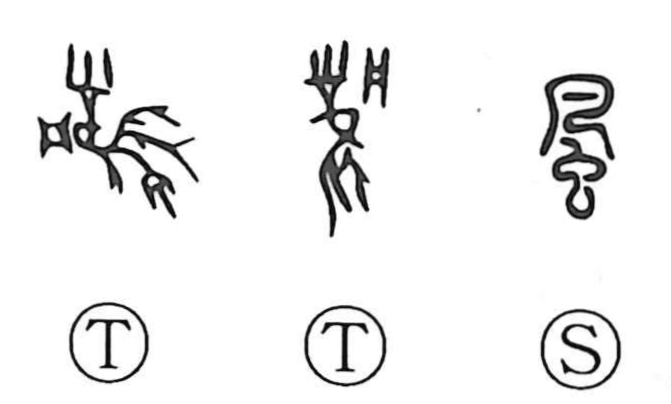

風

Kun: kaze, kaza | On: fu, fuu
wind ・ customs ・ style
Explanation
The earliest form of 風 belongs with 鳳, the great sacred bird. It shows a bird with a conspicuous crown, with 凡 serving as the sound element. The wind was understood through the divine being that brought it.
Later, dragons moving through the heavens were believed to raise the wind. The bird in the graph was replaced by 虫, a sign for a crawling creature that could also represent a dragon. The modern character preserves this later form.
Wind carried the influence of the power governing a region. Its effects extended beyond moving air to the region’s climate, character, and customary ways of life. From this come the senses ‘custom,’ ‘manner,’ and ‘style,’ as well as an influence that spreads through people and changes their conduct.